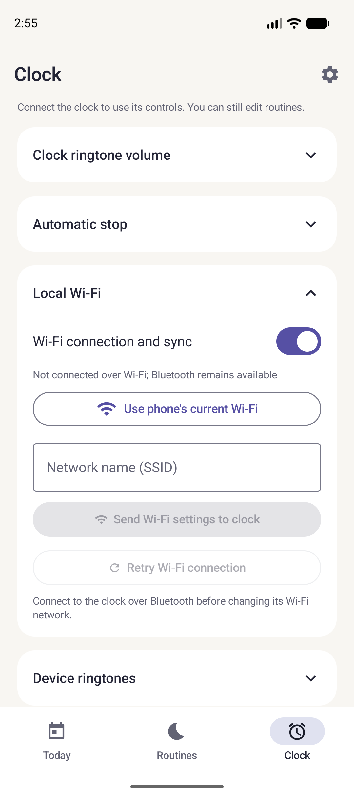

Configurer le Wi-Fi
Synchronisez le téléphone et le réveil sur le même réseau local.

- Connectez d’abord le téléphone au réveil en Bluetooth.
- Ouvrez Clock → Local Wi-Fi et activez Wi-Fi connection and sync.
- Renseignez le nom du réseau 2,4 GHz et son mot de passe. Le téléphone doit pouvoir joindre le réveil sur le même réseau local.
- Appuyez sur Send Wi-Fi settings to clock. Attendez ESP32 reachable over Wi-Fi.
- Si la connexion ne revient pas après un changement de réseau, utilisez Retry Wi-Fi connection ou renvoyez les paramètres en Bluetooth. Vérifiez que le réseau invité ne sépare pas les appareils.
Le Bluetooth reste disponible si le Wi-Fi ne répond pas. Retour à la première synchronisation.